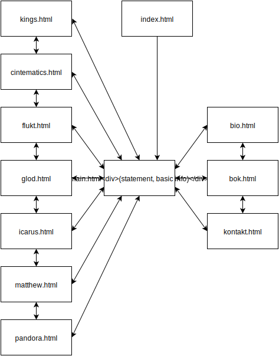
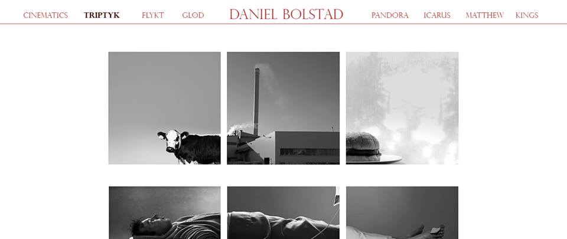

1. Document Details
P2 Design
Created by Ingrid, Jakob, Sondre, Torjus, Erik.
IT2805, 3. october 2016
2. Administrative Details
Klientnavn: Daniel Bolstad.
Kunstfotograf.
3. Purpose, goals, and audience
Lage en nettside der klienten blir fremmet som kunstner gjennom sine bilder. Nettsiden skal rette seg mot andre kunstnere av alle aldre. Nettsiden skal også legge til rette for salg av bok om mulig.
4. Navigation Structure
Nettsiden vil bli framstilt som et galleri. Den første siden brukeren blir møtt med er "inngangsporten", der brukeren får kun muligheten til å gå inn i galeriet. Denne siden vil det ikke være noen muligheter til å gå tilbake til senere. Inne i "galleriet" har brukeren mulight til å navigere mellom de ulike bildeseriene samt biografi, kontaktform og en egen side med informasjon om boka klienten skal lage. Det vil være mulig å fritt navigere mellom disse via en horisontal meny på toppen av siden.
Sitemap:
5. Page Layout and Appearance
I utformingen av designet til siden ble det lagt vekt på minimalisme, simplisitet og fokus på bildene.Med en gang kunne vi utelukke banner og oppmerksomhetskrevende bakgrunnsbilder, ned unntak av forsiden der bakgrunnen er en film laget av kunstneren selv. På resten av siden skal det være en lysegrå bakgrunn: #e8e4e4.Dette gjør vi for å ha en mest mulig nøytral bakgrunn med hensyn til innholdet; f. eks. ville ikke en hvit bakgrunn fungert da enkelte av bildene har hvit ramme.
Meny
For å gi mer fleksibilitet til galleri-innholdets bredde, la vi menyen horisontalt på toppen av siden. Lenkene, tittel og strek har vi gitt en rolig, mørkerød farge (#973d3d ) som går godt sammen med den grå bakgrunnsfargen. Til tross for ønske om simplisitet, brukte vi en antikva font på lenker og tittel for å lage litt konstraster; Trajan Pro. På brødtekst derimot har vi valgt en grotesk font ved navn Kozuka Gothic Pro. Ved å velge en font uten seriffer på brødtekst sikrer vi lesbarhet på skjermer med lav oppløsning.
For å gjøre brukeropplevelsen mer internaktiv og intuitiv, skal vi ha en hover-effekt på menylinkene med et fargeskifte til #371111.
Rød tråd
Som nesten det eneste designelementet, brukes en rød linje/tråd som går igjen i menyen og i info-siden om fotografen. Gjentakelse av det samme elementet gjøres for å sikre kontinuitet og for å gjøre siden mer enhetlig. Det gir også en vag følelse av dynamtikk i en ellers statisk side.
Forsiden
På forsiden prøvde vi å finne en balanse mellom fokus på filmen og fokus på fotografens navn. Det er lagt inn 3 sekunder med svart i begynnelsen av filmen for å fremheve navnet, samtidig som navnet er lagt i det gyldne snitt (horisontalt sett) orientert mot høyre. Det gjør at fokuset bytter til filmen når den starter uten av navnet forsvinner ute av syne.
6. Content
6.1 Startside (index.html)
Den første siden man kommer inn på vil ha en video, laget av klienten vår Daniel Bolstad, som går i bakgrunnen uten lyd. Den vil dekke hele siden. Det er en veldig stemningsfull film, og vil gi et kunstnerisk inntrykk. Med stor og tydelig skrift, sentrert på siden, vil det stå ”Daniel Bolstad” og ”Enter” som vil være en hyperlenke som sender brukeren videre. (Trenger mer om farge på font, type font og størrelse).
6.2 Hovedside (main.html)
Denne siden vil fungere som en hovedside. Her kan man gå videre til de ulike bildeserien ved å trykke på navnet til serien i en horisontal fiksert toppmeny. Denne menyen vil være lik på alle sidene, men navnet på den aktuelle serien vil være merkert ved at menyelementet får en annen mørkere farge. På hovedsiden vil det være mulig å gå videre til 'bio.html' , 'about.html' og 'bok.html'. Hovedsiden vil inneholde klientens "artist statement" samt informasjon om eventuelle utstillinger. Artist statement vil klienten skrive selv, og vi har ikke mottatt dette enda. (?).
6.3 Biografi (bio.html)
Inneholder biografi og kontaktinformasjon.Denne siden vil inneholde en biografi (tekst) og et bilde av klienten. Siden vil ha samme utforming som hovedsiden. Biografien vil naturligvis skrives i samarbeid med klienten.
6.4 Bok (bok.html)
Denne siden vil fokusere på boka til klienten, med muligheter til å sende brukeren videre til en ekstern kjøp og betal tjeneste. Dette er noe vi må se nærmere på om er gjennomførbart. - Klienten har enda ikke gitt ut en bok, men tenker å gjøre det i løpet av neste år. Derfor vil denne siden være dedikert til denne boken som skal komme, og kommer derfor til å være litt mangelfull frem til det skjer. (?).
6.5 Kontakt (kontakt.html)
Denne siden vil ha kontaktinformasjon til klienten med kontaktform. Det vil stå email og telefonnummer til klienten. Kontakform vil være en tekstboks der besøkere kan skrive meldinger som blir sendt til mailen til klienten. Denne vil ligge midt på siden, godt synlig. Formålet med kontaktformet er at besøkende vil ha en veldig enkel måte å kontakte klienten vår på, uten å måtte gå inn på mail eller sende sms osv. (?).
6.6 Bildeseriene
Alle bildeseriene vil følge samme stil og oppsett, men med små variasjoner for å reflektere stilen til hver enkelt bildeserie. Dette inkluderer ulik tone på bakgrunnsfarge, samt om det skal vises ett eller to bilder i bredden. Dette vil vi vurdere når vi setter inn bildene i hver serie. Et eksempel på bildeserien "triptyk.html" er vist i bildet under.
For å få følelsen av å gå inn i et galleri når man åpner en bildeserie vil det benyttes en visuell effekt, eksempel vise "fade in". Ved å klikke på et av bildene i en serie skal det komme opp en stor versjon av det bildet, med muligheter til å bla seg frem og tilbake i bideserien ved piler langs ytterkantene av bildet (?).
De ulike bildeseriene vil være:
- flukt.html
- glod.html
- icarus.html
- matthew.html
- pandora.html
- kings.html
- triptyk.html
- cintematics.html
7. Minimum Requirements
Javascrip-funksjonaliteter:
- Animasjon når brukeren bytter mellom forsidebilder: Tittel på bildeserie vises og alle andre bilder får en gråtone.
- "Fade in"-animasjon ved åpning av bildeserie.
- Verifisering av kontaktform kan gjøres med Javascript
8. Plan
| Side | Arbeidsoppgave | Hovedansvar | Frist |
|---|---|---|---|
| index.html | Erik | Okt. 20 | |
| bio.html | Jakob | Okt. 20 | |
| kontakt.html | Jakob | Okt. 20 | |
|
cinematics.html flukt.html glød.html icarus.html matthew.html pandora.html kings.html |
Torjus, Ingrid | Okt. 20 | |
| bok.html | Erik | Okt. 31 | |
| main.html | Erik, Sondre | Okt. 20 | |
| designelementer | Fonter, header, meny, enterknapp, skisser | Sondre | Okt. 8 |
| style.css | Alle | Nov. 5 | |
| JavaScript | Sondre | Nov. 11 |
Vi har allerede motatt alle bildeseriene til klienten. Det eneste vi mangler er et nytt bilde for bioen, da han har bedt spesifikt om dette, og eventuelt et bilde av boken.